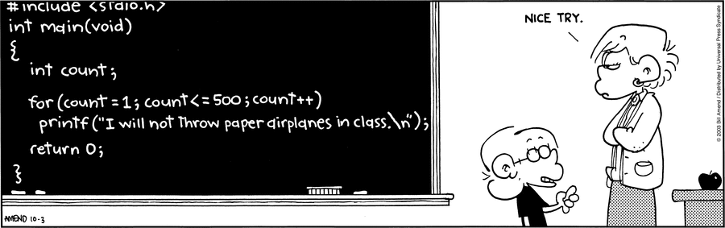
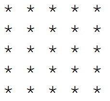
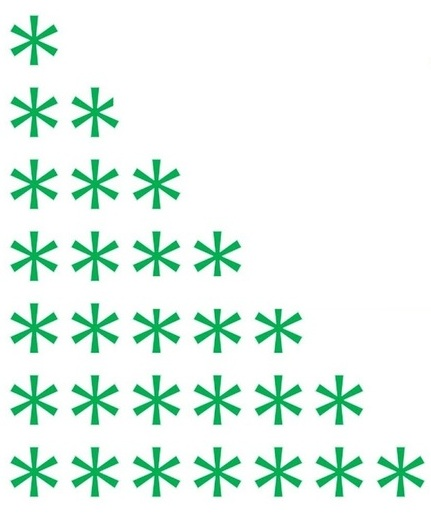

def sumFromMToN(m, n):
total = 0
# note that range(x, y) includes x but excludes y
for x in range(m, n+1):
total += x
return total
print(sumFromMToN(5, 10) == 5+6+7+8+9+10)
def sumFromMToN(m, n):
return sum(range(m, n+1))
print(sumFromMToN(5, 10) == 5+6+7+8+9+10)
# And we can even do this with a closed-form formula,
# which is the fastest way, but which doesn't really
# help us demonstrate loops. :-)
def sumToN(n):
# helper function
return n*(n+1)//2
def sumFromMToNByFormula(m, n):
return (sumToN(n) - sumToN(m-1))
print(sumFromMToNByFormula(5, 10) == 5+6+7+8+9+10)
def sumToN(n):
total = 0
for x in range(n+1):
total += x
return total
print(sumToN(5) == 0+1+2+3+4+5)
def sumEveryKthFromMToN(m, n, k):
total = 0
for x in range(m, n+1, k):
total += x
return total
print(sumEveryKthFromMToN(5, 20, 7) == (5 + 12 + 19))
def sumOfOddsFromMToN(m, n):
total = 0
for x in range(m, n+1):
if (x % 2 == 1):
total += x
return total
print(sumOfOddsFromMToN(4, 10) == sumOfOddsFromMToN(5,9) == (5+7+9))
def sumOfOddsFromMToN(m, n):
if (m % 2 == 0):
# m is even, add 1 to start on an odd
m += 1
total = 0
for x in range(m, n+1, 2):
total += x
return total
print(sumOfOddsFromMToN(4, 10) == sumOfOddsFromMToN(5,9) == (5+7+9))
# Here we will range in reverse
# (not wise in this case, but instructional)
def sumOfOddsFromMToN(m, n):
if (n % 2 == 0):
# n is even, subtract 1 to start on an odd
n -= 1
total = 0
for x in range(n, m-1, -2):
total += x
return total
print(sumOfOddsFromMToN(4, 10) == sumOfOddsFromMToN(5,9) == (5+7+9))
def sumOfOddsFromMToN(m, n):
if (m % 2 == 0): m += 1
return sum(range(m, n+1, 2))
print(sumOfOddsFromMToN(4, 10) == sumOfOddsFromMToN(5,9) == (5+7+9))
# This is the worst way so far -- too confusing.
def sumOfOddsFromMToN(m, n):
return sum(range(m + (1 - m%2), n+1, 2)) # this works, but it's gross!
print(sumOfOddsFromMToN(4, 10) == sumOfOddsFromMToN(5,9) == (5+7+9))
def printCoordinates(xMax, yMax):
for x in range(xMax+1):
for y in range(yMax+1):
print("(", x, ",", y, ") ", end="")
print()
printCoordinates(4, 5)

def printStarRectangle(n):
for row in range(n):
for col in range(n):
print("*", end="")
print()
printStarRectangle(5)

def printStarPyramid(n):
for row in range(n):
print(row, end=" ")
for col in range(row):
print("*", end=" ")
print()
printStarPyramid(7)
def getPositiveInteger():
userInput = 0
while(userInput <= 0):
userInput = int(input("Enter a positive integer: "))
return userInput
def leftmostDigit(n):
while (n >= 10):
n = n // 10
return n
print(leftmostDigit(1234)) # prints 1
print(leftmostDigit(-1234)) # prints -1234 (wrong answer)
def leftmostDigit(n):
n = abs(n)
while (n >= 10):
n = n // 10
return n
print(leftmostDigit(-1234)) # prints 1
def countToN(n):
counter = 1
while(counter <= n):
print(counter)
counter += 1
countToN(7)
# eg: find the nth number that is a multiple of either 4 or 7
def isMultipleOf4or7(x):
return ((x % 4) == 0) or ((x % 7) == 0)
def nthMultipleOf4or7(n):
found = 0
guess = -1
while (found <= n):
guess += 1
if (isMultipleOf4or7(guess)):
found += 1
return guess
print("Multiples of 4 or 7: ", end="")
for n in range(15):
print(nthMultipleOf4or7(n), end=" ")
print()
# Note: there are faster/better ways. We're just going for clarity and simplicity here.
def isPrime(n):
if (n < 2):
return False
for factor in range(2,n):
if (n % factor == 0):
return False
return True
# And take it for a spin
for n in range(100):
if isPrime(n):
print(n, end=" ")
print()
#Note: this is still not the fastest way, but it's a nice improvement.
def fasterIsPrime(n):
if (n < 2):
return False
if (n == 2):
return True
if (n % 2 == 0):
return False
maxFactor = round(n**0.5)
for factor in range(3,maxFactor+1,2):
if (n % factor == 0):
return False
return True
# And try out this version:
for n in range(100):
if fasterIsPrime(n):
print(n, end=" ")
print()
def isPrime(n):
if (n < 2):
return False
if (n == 2):
return True
if (n % 2 == 0):
return False
maxFactor = round(n**0.5)
for factor in range(3,maxFactor+1,2):
if (n % factor == 0):
return False
return True
# Adapt the "nth" pattern we used above in nthMultipleOf4or7()
def nthPrime(n):
found = 0
guess = 0
while (found <= n):
guess += 1
if (isPrime(guess)):
found += 1
return guess
# and let's see a list of the primes
for n in range(10):
print(n, nthPrime(n))
print("Done!")